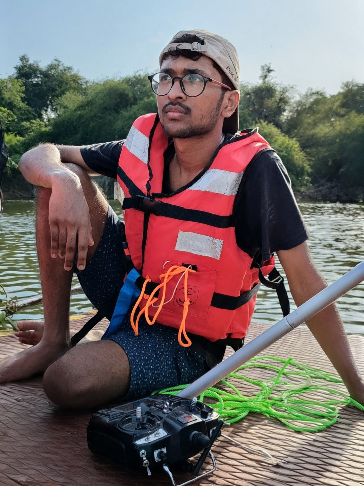
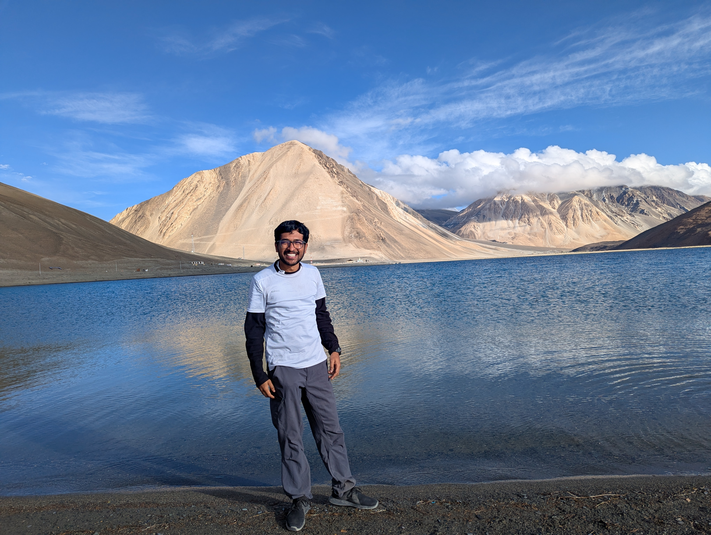
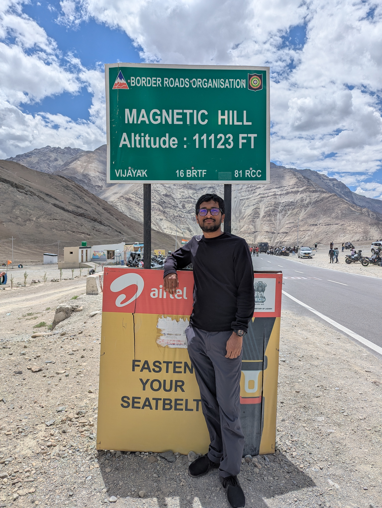
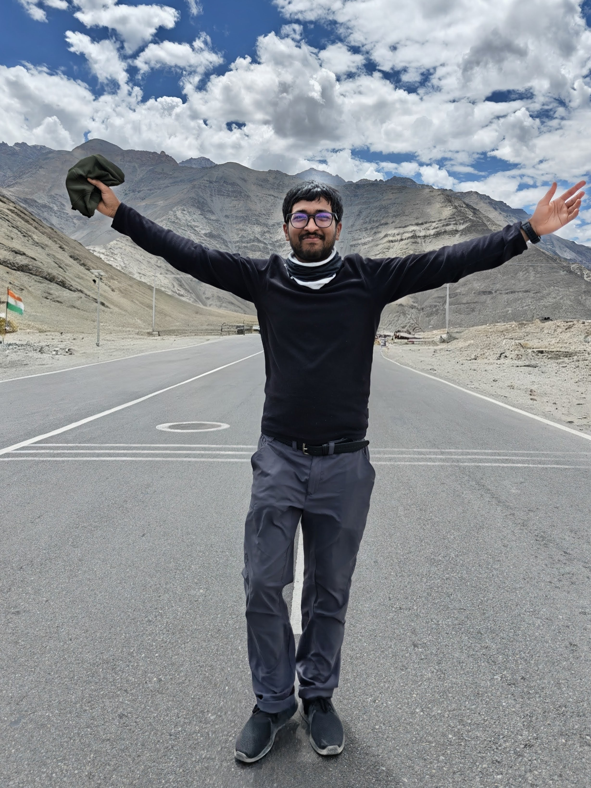
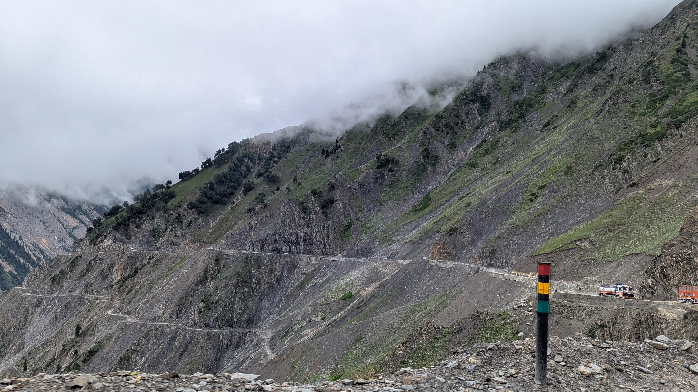
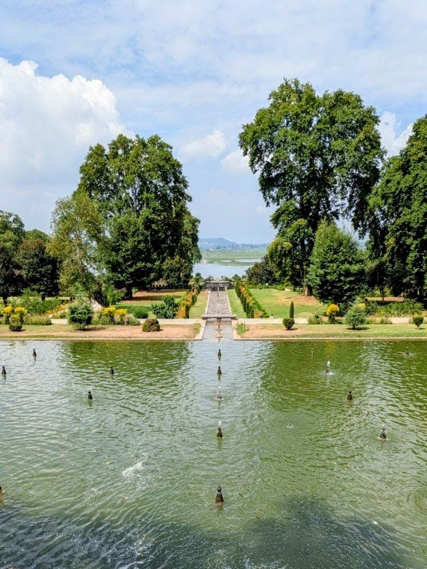
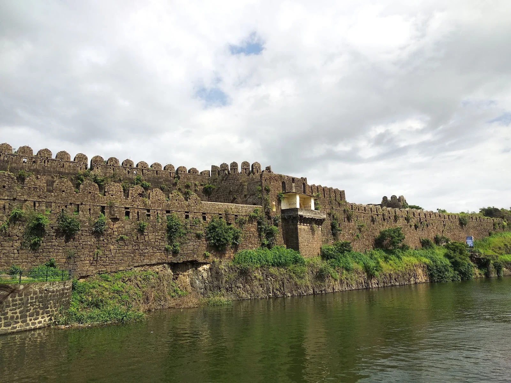

Specialist at ZF Group • IDDD Robotics & B.Tech Naval Architecture, IIT Madras
Chronicle & Perspectives
Life, Milestones & Reflections
Engineering is what I do, but curiosity is what drives me. This page is a personal window into the key turning points of my life—from college trials and international robotics competitions to high-altitude expeditions, documentary fascinations, and written thoughts on mobility and technology.
Key moments, academic turning points, and professional milestones that have shaped my path.
August 2017
The IIT Madras Chapter Begins
Stepped into the lush campus of IIT Madras to pursue a Bachelor of Technology in Naval Architecture and Ocean Engineering. The challenging environment quickly sparked an appetite for dynamics, fluid-structure interaction, and computational modeling.
2020 – 2021
Embracing Robotics & Autonomous Systems
Selected for the prestigious Interdisciplinary Dual Degree (IDDD) in Robotics at IIT Madras. Began deeply researching Guidance, Navigation, and Control (GNC), sensor fusion, Robot Operating System (ROS), and machine learning applied to physical autonomous agents.
2021 – 2022
Project MATSYA & Lake Trials
Developed guidance and control architectures for the scaled Kriso Container Ship (MATSYA) at the Marine Autonomous Vehicles (MAV) Lab. Validating navigation algorithms during open-water lake testing cemented my appreciation for experimental rigor.

April 2022
5th Place Globally — Virtual RobotX
Competed alongside an exceptional team of student engineers against 33 international university teams in the Virtual RobotX (VRX) competition organized by NPS, Robonation, and ONR, securing 5th Prize Globally for autonomous maritime behaviors in Gazebo.
July 2022
Convocation: Dual Degree Awarded
Graduated with both a B.Tech in Naval Architecture & Ocean Engineering and an M.Tech in Robotics from IIT Madras. A proud day marking the culmination of five intense years of learning, late-night lab builds, and published research.
August 2022
Entering Automotive with ZF Group
Shifted from ocean autonomy to the fast-evolving world of next-generation passenger vehicles. Joined ZF Group as a Senior Engineer focused on Vehicle Motion Control, translating nonlinear control theory and state estimation onto real asphalt.
June 2023
Ladakh & Kashmir High-Altitude Expedition
Embarked on a breathtaking overland journey across the northern Himalayas—traversing Leh, Magnetic Hills, the crystal waters of Pangong Tso (14,270 ft), and the rugged Zoji La pass from Kargil into the Kashmir Valley.

2024 – Present
Specialist — Vehicle Motion Control
Stepped into the role of Specialist at ZF Group. Today, I collaborate with an exceptional engineering team to architect, validate, and deploy cutting-edge control algorithms that govern steering, braking, and propulsion dynamics for the future of mobility.
Adventures & Heritage Gallery
Glimpses of travels, high-altitude road trips, heritage architecture, and memorable moments from my journey.
Ladakh Expedition
Pangong Tso
Resting at 14,270 ft along the Indo-Tibetan border under stark mountain skies.

Highways & Geology
Magnetic Hills
Famous optical illusion highway in Ladakh where gravity appears to operate in reverse.

Road Trip
Trans-Himalayan Highway
Miles of silence and winding asphalt carving through the mountain passes.

Mountain Passes
Kargil to Srinagar
Descending from high mountain passes into the verdant beauty of Kashmir Valley.

Heritage & History
Nishat Bagh, Srinagar
17th-century Mughal terraced garden flanking Dal Lake with Zabarwan mountain views.

Historical Architecture • Video
Naldurg Fort & Pani Mahal
Historic medieval fort in Dharashiv showcasing hydraulic engineering and aqueducts.
IIT Madras
Dual Degree Convocation
Marking the completion of my academic coursework and autonomous robotics thesis.
Robotics Fieldwork
MATSYA Lake Testing
Deploying sensors and guidance algorithms outdoors under real-world water conditions.
Global Competition
Virtual RobotX Team
Collaborating across perception, GNC, and Gazebo simulation to rank 5th worldwide.
Writings & Thoughts
Essays, technical musings, and personal ideas exploring control systems, motorsports, and technological history.
Control & Autonomy 4 min read
From Ocean Waves to Automotive Wheels: A Control Engineer's Perspective
At first glance, an underactuated cargo vessel navigating open ocean waves seems worlds apart from a luxury passenger car carving through a mountain hairpin. Yet, underneath the surface, the mathematics of motion control speak the exact same language.
Motorsports & Telemetry 5 min read
The Art of Split Seconds: What Formula 1 Telemetry Teaches Us About Systems Engineering
Formula 1 isn't just motorsport; it is the ultimate laboratory for control, strategy, and rapid feedback loops. Here is what analyzing throttle traces, brake pressures, and tire degradation curves in Baku taught me about vehicle dynamics.
History & Curiosity 4 min read
Lessons in Innovation: Why History & Technology Documentaries Shape How I Think
Whenever I want to recharge, I dive into deep-dive documentaries on science, naval warfare, and industrial engineering. Every modern autonomous algorithm we write stands on centuries of brilliant historical ingenuity.